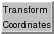

Transform Coordinates

Transform Coordinates applies a specified
rotation and translation to a model.
There are several ways to start
Transform Coordinates, a tool in the Movement category.
The Model should be chosen from the list of open models.
Its transformation is specified with:
- Euler angles [φ θ ψ] - rotations
defined by the χ-convention,
where the first rotation is by an angle φ about the Z-axis,
the second is by an angle θ (potentially ranging from 0 to π)
about the new X-axis, and the third is by an angle ψ
about the new Z-axis.
- Shift [X Y Z] - translations along X, Y, and Z
For a molecule model (atomic structure or
marker set):
- Move atoms instead of coordinate axes -
whether to change the atomic coordinates of the model rather than its
transformation matrix
Clicking Apply performs the rotation and translation.
The cumulative change from the original transformation
is reported in the dialog.
Reset restores the original transformation.
Set is equivalent to clicking Reset and then Apply.
Cumulative change information and original coordinates
are not retained in saved
sessions.
UCSF Computer Graphics Laboratory / April 2010